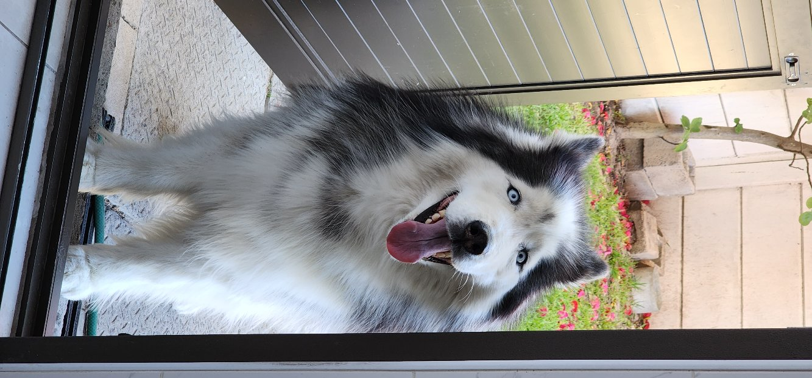
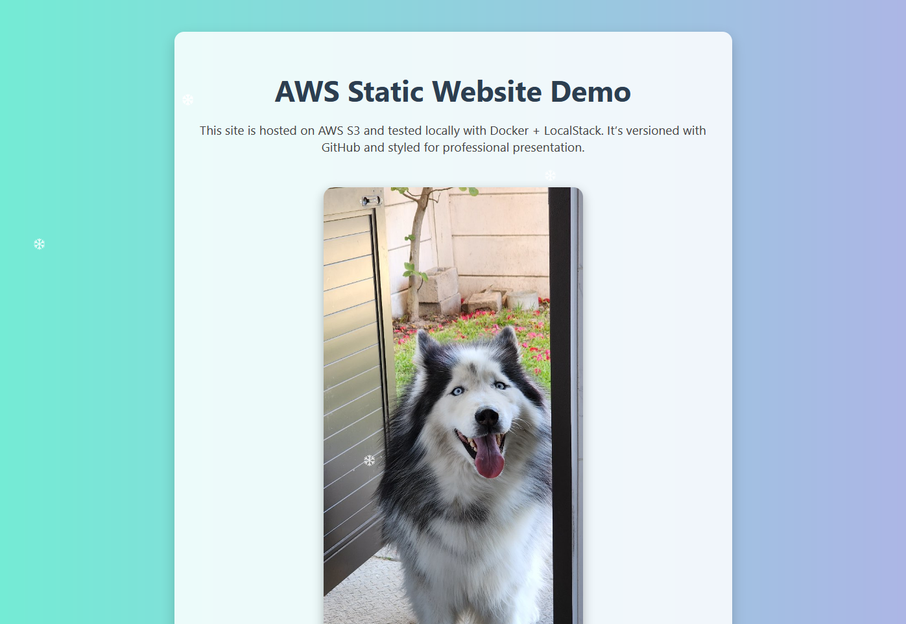
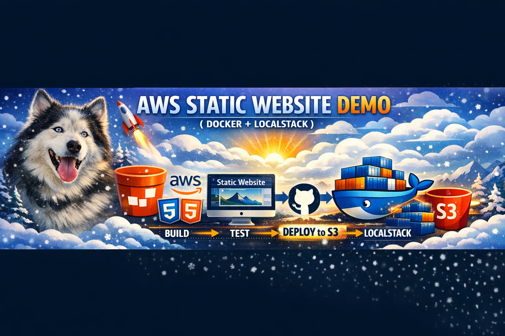

AWS Static Website Demo
This site is hosted on AWS S3 and tested locally with Docker + LocalStack. It’s versioned with GitHub and styled for professional presentation.

Meet my Husky — guarding the pipeline from build to deploy.

